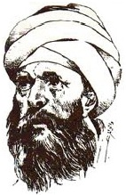

Ebu Hamid Muhammad bin Muhammad el-Tusi el-Gazâli (1058-1111) veya sadece Gazâli, en etkili İslam ilahiyatçılarından ve filozoflarından biridir. Bugünkü İran’ın parçası olan Tus’ta doğdu.

Gazâli, Sünnî İslam içindeki dört meşru ekolden biri olan Şâfî hukukunu öğrendi ve öğretti. Otuz üç yaşıyla beraber Gazali, bu alanın liderlerinden biri olarak kendisini kanıtladı ve Bağdat’taki Nizamiye Okulu’nun başına getirildi. Bu görevde dört yıl hizmet etti ve görevi süresince halk tarafından çok sevildi.
Gazâli’nin önde gelen eserlerinden biri, Filozofların Tutarsızlığı’dır. Bu eserinde Gazâli, dünyadaki olayların Tanrı’nın o andaki arzusuyla belirlendiğini iddia etti. Bu, temel olarak doğadaki tüm diğer kaynakları ortadan kaldırır ve her şeyi doğrudan Tanrı’nın eline yerleştirir.
Eserde Gazâli, Platon ve Artisto gibi antik çağ filozoflarını ve onların düşünce çizgisini takip eden Müslümanları eleştirdi. Bu filozofların, dinî sorulara cevap verirken akla başvurmasının yanlış olduğunu iddia eder. Gazâli, aklın Tanrı’nın varlığı gibi din hakkında mutlak hakikatleri ispatlamak için kullanılabilmesi durumunda, herkesin bu hakikatlere katılacağını söyledi. Onun yerine Gazâli, akılcı düşüncenin dinî cevapların kaynağı olamayacağına inandı.
1095’te Gazâli, bir ruhanî değişim geçirdi. Okulu bıraktı ve Arap yarımadasında dolaştı. Şam’a, Kudüs’e, Mekke’ye, Medine’ye, Mısır’a, tekrar Bağdat’a ve sonunda memleketi Tus’a gitti. Gazâli’nin birçok sûfî düzenden birini takip etmeye başlaması bu sıralardaydı.
Gazâli, Tanrı’nın gerçek doğasının bilinemeyeceği fikrindeki Aşarit düşünce okuluna uzun süre devam etti. Bu okul, Gazâli’nin en önemli eseri olan Filozofların Tutarsızlığı’na itibar gösterir. Seyahatleri sonunda Gazâli’nin, sufizmin gizemciliğinin Tanrı ile bağ kurmanın en iyi yolunu sunduğuna karar vermesi büyük bir sıçrama değildi. Çok sevilen ve ititbar edilen Gazâli’nin, sûfî düzenlerle uzlaşması, toplumun genelinde sufizmin güvenirliliğinin artmasını sağladı.
EK BİLGİLER:
1. Felsefî olarak Gazâli’nin eseri, felsefî şüpheciliğe varır. George Berkeley ve David Hume’dan kaynaklanan İngiliz düşünce okuluna benzerdir, ama 700 sene öncesinde ortaya çıkmıştır.
2. Gazâli’nin en büyük eleştirmeni, “Tutarsızlığın Tutarsızlığı” adındaki en büyük eleştirel çalışmasıyla meşhur, batıda Averroes adıyla da bilinen İbn-i Rüşd’tür.